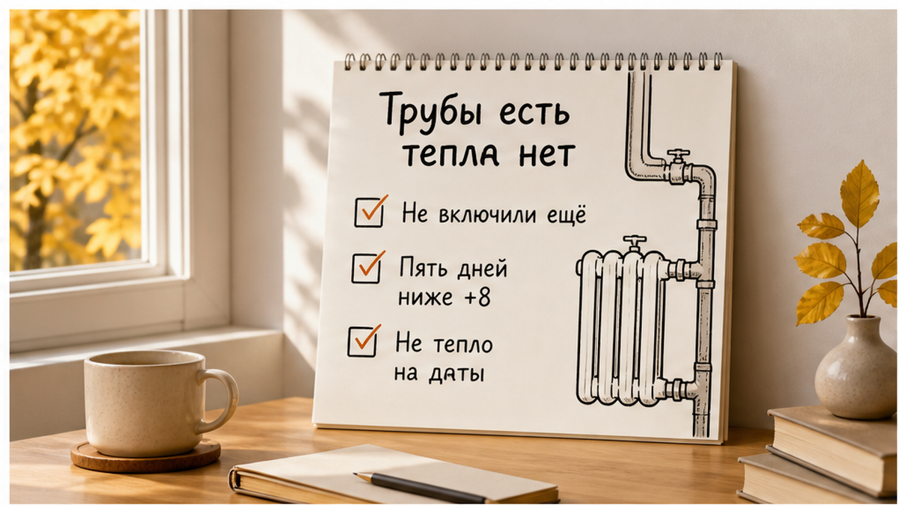
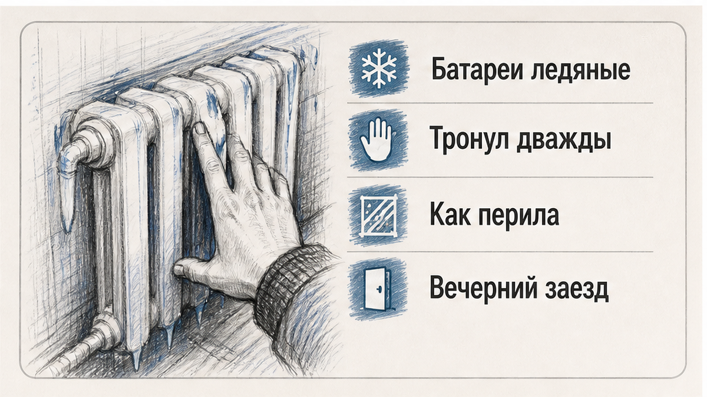
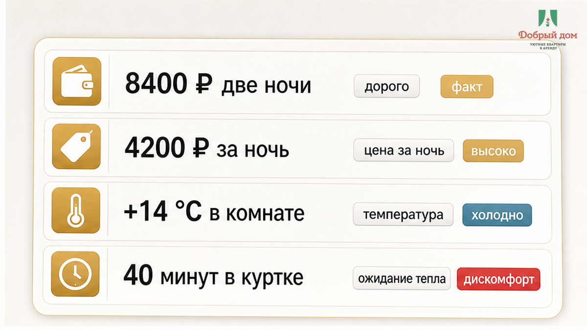
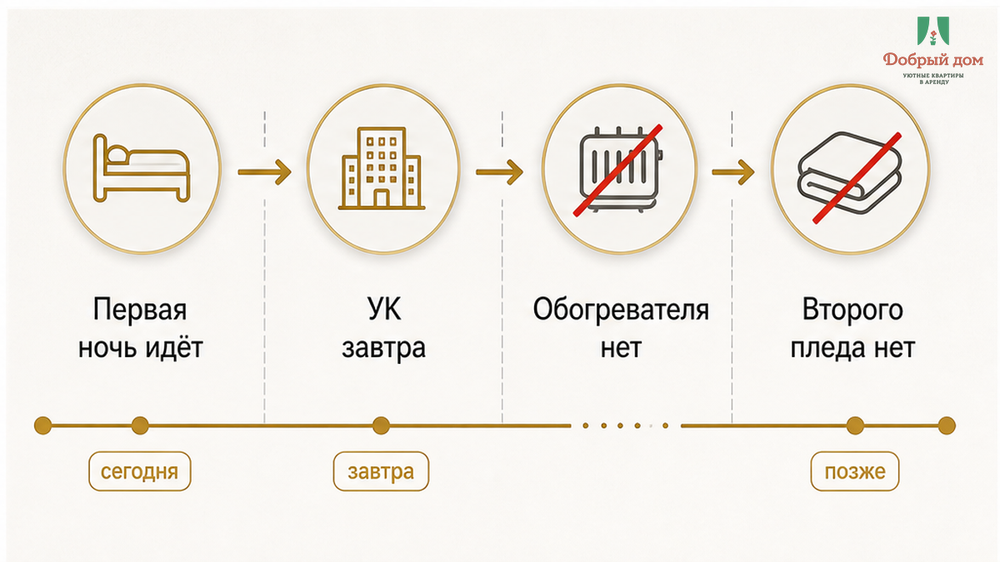
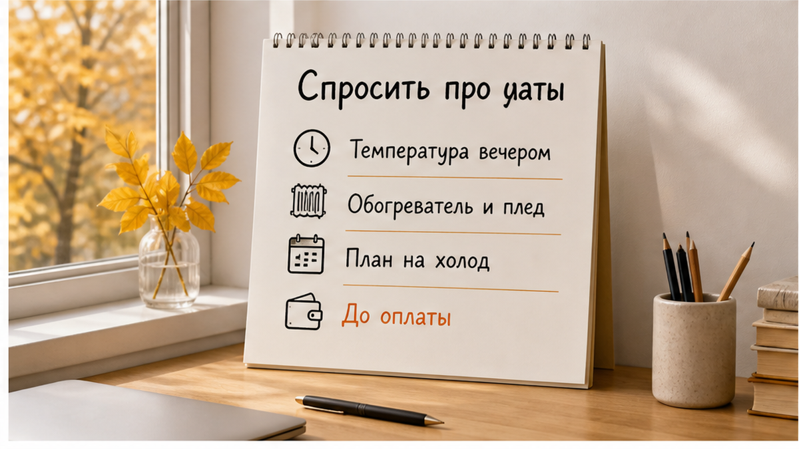

«УК ещё не включила, завтра должны» — так хост ответил гостю, который написал из комнаты с температурой +14 °C. Гость заплатил 4 200 ₽ за ночь, взял две ночи за 8 400 ₽ вперёд, приехал прохладным вечером ранней осени и сорок минут просидел на диване в куртке. Батареи он потрогал дважды: ледяные, как перила в подъезде. А в объявлении стояло: «отопление есть». Для нормального человека это значит одно: сегодня ночью можно будет спать без верхней одежды.
Я хост посуточной в Тюмени. Это «Добрый дом». Такие сообщения приходят ко мне в Telegram и MAX регулярно. Люди не требуют сауну. Они хотят понять, будет ли в комнате тепло в ту ночь, за которую уже заплатили.



В квартире действительно может быть центральное отопление: трубы, стояки и радиаторы смонтированы, дом подключён к теплосети. Но это описание дома, а не обещание температуры в конкретный вечер. Между «отопление есть» и «в комнате тепло» в сентябре помещаются решение города, запуск теплосети, работа управляющей компании и несколько дней ожидания.
Отопительный сезон в Тюмени начинается не по желанию собственника и не просто по календарю. По правилу из ПП РФ №354, среднесуточная температура на улице должна держаться ниже +8 °C пять дней подряд. После этого уполномоченный орган принимает решение о начале сезона, а теплосеть запускает подачу. Сначала обычно подключают социальные объекты — школы, детские сады, больницы. Жилые дома получают тепло позже, с отставанием в 3–7 дней, и по стоякам оно расходится не мгновенно.
В прошлые годы старт в Тюмени приходился примерно на 21–23 сентября. Но если нужные пять холодных дней ещё не набрались, официального запуска может не быть. При устойчивом похолодании тепло в жилом фонде можно ждать примерно 1–2 октября. Именно «можно ждать», а не обещать гостю как факт.
Нормативная температура в жилой комнате — +18 °C, в угловой — +20 °C. При +14 °C человек находится ниже нормы, и это не каприз. Но нормы применяются в отопительный сезон. До его официального начала управляющая компания в общем случае не обязана подавать тепло в дом. Поэтому фраза «УК не включила» может быть формально правдивой. Только от этой правды в комнате не становится теплее.
Город принимает решение по погоде, теплосеть подаёт тепло, УК организует запуск и регулирует систему. Но посуточный гость покупает не факт наличия радиатора. Он покупает ночь, пригодную для сна. Поэтому перед гостем отвечает тот, кто взял деньги за эту ночь. То есть хост. И я — когда речь идёт о моих квартирах.

Цепочка здесь простая: в карточке написано «отопление есть», гость понимает это как «будет тепло», платит 8 400 ₽, приезжает, видит +14 °C и ледяные батареи, пишет хосту. В ответ получает: «Сезон ещё не начался, УК завтра должны». Но первая из двух оплаченных ночей уже идёт. Обогревателя нет, второе одеяло не предложили, альтернативную квартиру не назвали.
«Завтра» — это не план на сегодняшний вечер. Гость не может перенести холод на следующий день и вернуть себе сорок минут в куртке. Формально хост может ссылаться на городской график. Фактически человек оплатил полную стоимость услуги, а получил комнату, в которой нельзя нормально отдыхать.
У вас «отопление есть» — это тепло сегодня или просто трубы в доме? Напишите в Telegram или MAX: подскажем, какие вопросы задать до перевода денег.
Такая подмена встречается не только с отоплением. Вот случай, где «горячая вода есть», а гость получил ледяной душ и мигающий котёл. В другом объявлении было «всё для гостей», но в ванной лежал один мокрый коврик. Ещё один пример — «кухня есть», после которой три ночи прошли в кафе. И похожая история с деньгами: «коммуналка включена», а на выезде появился счёт 1 840 ₽. Везде одно: наличие выдают за пригодность.

Нет. Так не заселяем. Если сезон в городе ещё не открыт, а вечера уже холодные, я не пишу в карточке два удобных слова и не жду, что гость догадается сам. Я указываю: центральное отопление в доме есть, сезон пока не стартовал, в квартире есть обогреватель и тёплое одеяло, а вечерняя температура может быть такой-то. Это менее красиво, зато решение принимается до оплаты, а не после заселения.
Тем, кто ищет квартиру посуточно в Тюмени в межсезонье, советую задать один прямой вопрос: «Отопление уже включено на мои даты или сезон ещё не начался, и что есть на случай холода?» Ответ «не переживайте» ничего не объясняет. Нужны цифры и конкретный план. Сначала проверка. Потом перевод. Не наоборот.
Сохраните этот список перед бронированием:
Хосту тоже стоит помнить: фраза «УК не включила» объясняет регламент, но не возвращает гостю комфорт и репутацию. Гость запомнит не порядок запуска, а ночь за 4 200 ₽, проведённую в куртке. Он платит не за наличие батарей, а за возможность снять куртку и уснуть.
Если нужна квартира в Тюмени и важно заранее знать, будет ли тепло вечером, напишите нам. Ответим цифрами и условиями: